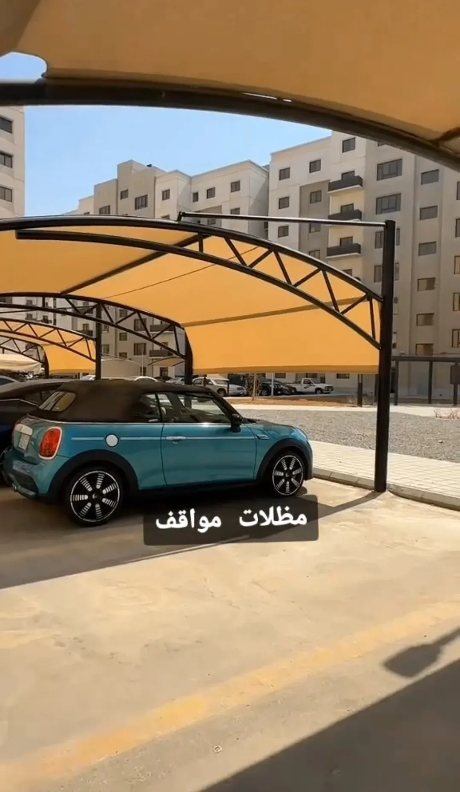
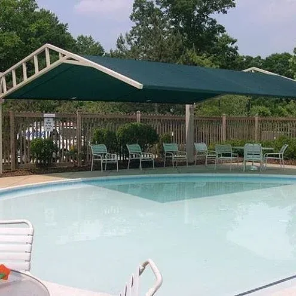
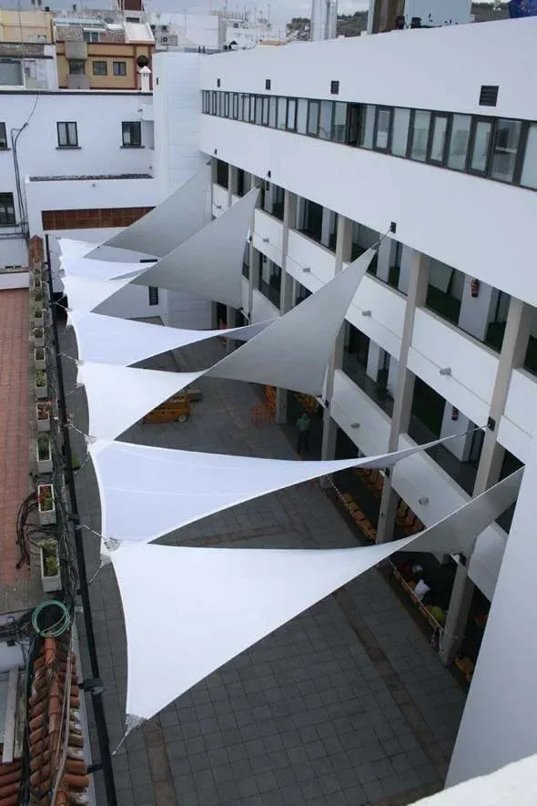
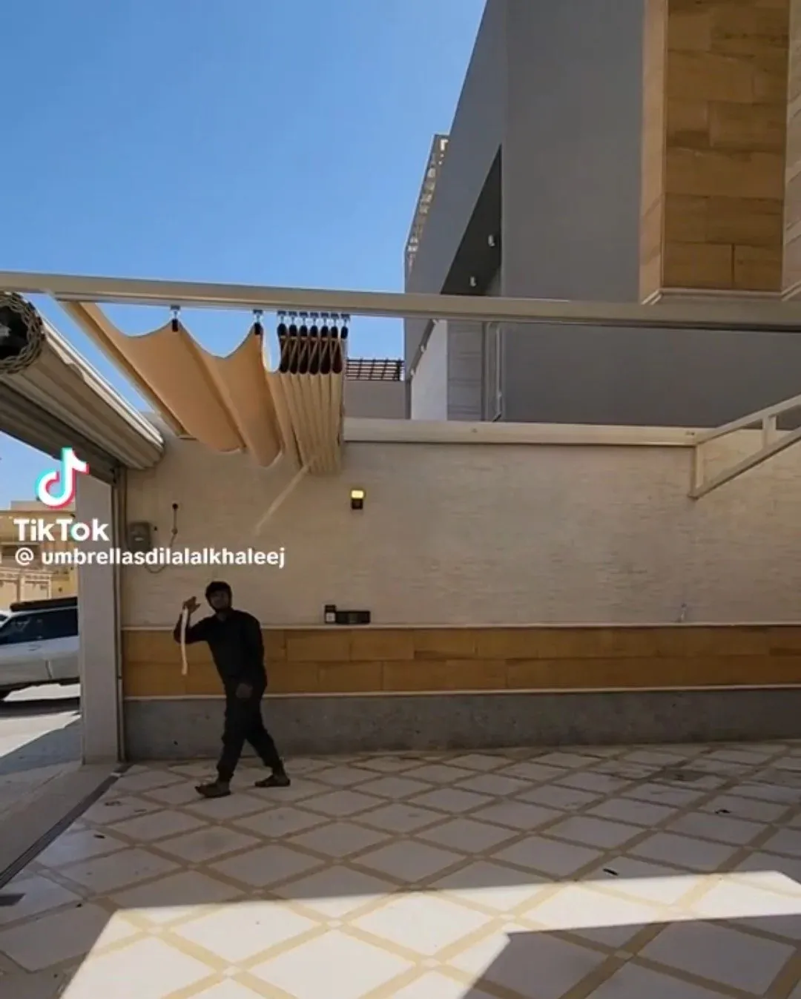
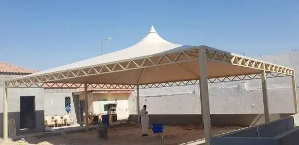
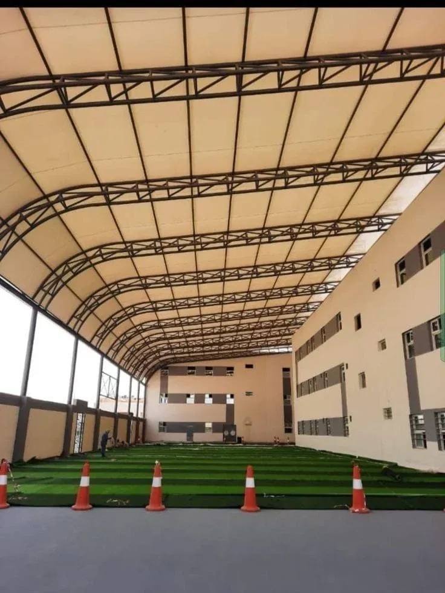
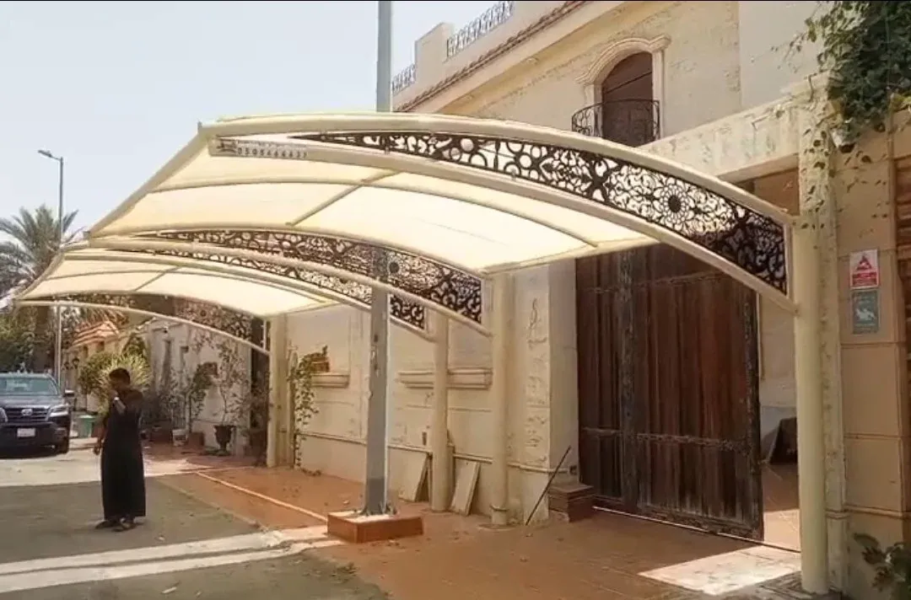

لماذا مظلة جدة مختلفة عن أي مدينة أخرى
المصمم الذي يبني مظلة لمناخ داخلي جاف يخطئ إذا طبّق نفس المواصفات في جدة. هنا يجتمع حِمل حراري مرتفع طوال العام مع رطوبة ساحلية تُسرّع تآكل المعادن غير المعالجة، إضافة إلى رياح موسمية قد تكون أعنف مما يتوقعه كثير من الملاك. لذلك نبني كل مظلة بثلاث اعتبارات معًا: مقاومة الأشعة فوق البنفسجية للقماش، مقاومة الصدأ للهيكل، ومقاومة الرفع للرياح — لا اعتبارًا واحدًا على حساب الآخرين.
أنواع المظلات التي ننفذها

مظلات سيارات كابولي ومنحنية
عمود جانبي واحد يحرر مساحة الموقف من الأعمدة الوسطى، مناسبة للفلل والمعارض التي تحتاج حركة مركبات بلا عوائق.

مظلات ومظلات-شمسية للمسابح
مظلات كابولي دوارة وثابتة، بأقمشة مقاومة للكلور والرطوبة، تحمي جلسة المسبح دون تظليل الماء بالكامل إن رغبت.

أشرعة الظل (Shade Sails)
قطع قماش مشدودة بزوايا هندسية متعددة، الخيار الأخف والأسرع تركيبًا لساحات الحدائق والملاعب ومناطق اللعب.

مظلات متحركة وسحب يدوي
تُفتح وتُطوى حسب الحاجة، مناسبة للممرات والمقاهي التي تريد التحكم في مساحة الظل خلال اليوم.

المظلات الهرمية والمخروطية
شكل مركزي واحد لكل عمود، يُستخدم لتظليل نقاط جلوس فردية أو تكرارها بنمط منتظم في الساحات الكبيرة.

مظلات المنشآت الكبيرة والملاعب
هياكل قوسية أو جملونية بامتداد واسع، مصممة لتحمّل أحمال رياح أعلى، مناسبة للمدارس والمرافق الحكومية.
الخامات: كيف نختار لك
- قماش المظلة: PVC مقوّى للمساحات الكبيرة والمنشآت العامة، أو HDPE الشبكي للأشرعة والملاعب التي تحتاج تهوية أفضل مع تظليل جزئي.
- هيكل التثبيت: حديد مجلفن للمواقع القريبة من البحر بسبب مقاومته العالية للرطوبة، أو حديد مطلي حراريًا للمساحات الداخلية الأبعد عن الأملاح.
- نظام التثبيت الأرضي: قواعد خرسانية مدفونة للمظلات الكبيرة والدائمة، أو قواعد سطحية قابلة للتفكيك للمواقع المؤجرة أو المؤقتة.



عوامل تحديد السعر
| العامل | أثره على السعر |
|---|---|
| نوع القماش (PVC أو شبكي HDPE) | الفرق بين تكلفة اقتصادية ومقاومة أعلى للعوامل الجوية |
| نظام الهيكل (كابولي، جملون، قوسي) | الكابولي أعلى تكلفة لتعقيده الإنشائي مقابل حرية المساحة |
| ارتفاع وامتداد المظلة | كل متر إضافي يرفع كمية الحديد والقماش المطلوبة |
| نوع التثبيت (خرساني أو سطحي) | القواعد الخرسانية أعلى تكلفة أولى وأطول عمرًا افتراضيًا |
صيانة المظلات
مظلة تُركَّب اليوم بلا خطة صيانة تفقد كفاءتها الحرارية والإنشائية خلال موسمين فقط:
- فحص شدّ القماش دوريًا وإعادة ضبطه بعد المواسم الريحية.
- تنظيف سطح القماش من الغبار والأتربة المتراكمة للحفاظ على مقاومته للأشعة فوق البنفسجية.
- فحص نقاط اللحام والتثبيت الأرضي للتأكد من عدم وجود ارتخاء.
- معالجة أي بداية صدأ في الهيكل المعدني بالدهان الحراري قبل انتشارها.
أسئلة يتكرر سؤالها
كم يستغرق تركيب مظلة سيارات منزلية؟
عادة بين يوم وثلاثة أيام بعد اعتماد التصميم، حسب مساحة الموقف وجاهزية الموقع لصب القواعد.
هل تقاوم المظلات القماشية أمطار جدة الشتوية؟
نعم عند ضبط ميلان القماش بشكل صحيح لتصريف المياه بدل تجمّعها، وهذا جزء من حساباتنا الإنشائية قبل التركيب.
هل يمكن تفكيك المظلة ونقلها إلى موقع آخر لاحقًا؟
في حال اخترت نظام التثبيت السطحي القابل للفك، نعم؛ أما القواعد الخرسانية المدفونة فهي حل دائم غير قابل للنقل بسهولة.
ما مدة الضمان على مظلات الحديد؟
نمنح ضمانًا مكتوبًا يغطي التصنيع والتركيب، ونحدد مدته بحسب نوع الخامة المختارة عند التعاقد.